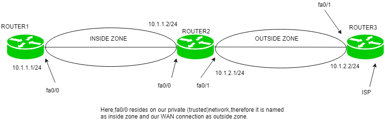
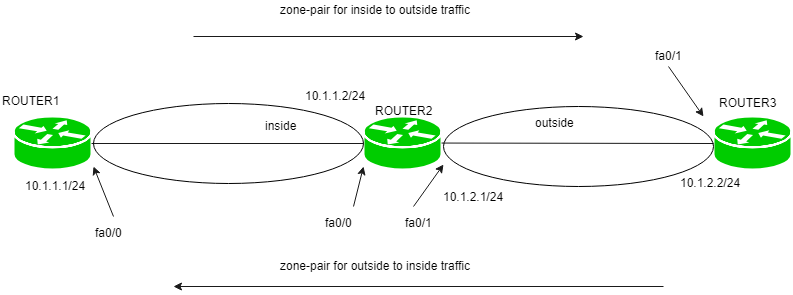

Firewall Zone
Zone-based firewall
A firewall is a network security system that monitors and takes actions on the ingoing or outgoing packets based on the defined rules. It can be a hardware device or software.
An organization that cannot afford a hardware firewall device uses an alternative i.e implementing firewall features on Cisco IOS router by using CBAC or by using a Zone-based firewall.CBAC is a predecessor to a Zone-based firewall.
Zone-based Firewall –
A Zone-based firewall is an advanced method of the stateful firewall. In a stateful firewall, a stateful database is maintained in which source IP address, destination IP address, source port number, destination port number is recorded. Due to this, only the replies are allowed i.e if the traffic is Generated from inside the network then only the replies (of inside network traffic) coming from outside the network is allowed.
Cisco IOS router can be made firewall through two methods:
1. By using CBAC: create an access-list and apply it to the interfaces keeping in mind what traffic should be allowed or denied and in what direction. This has an extra overhead for the administrator.
2. Using a Zone-based firewall.
Terms:
1. Zone – A zone is a logical area in which the devices having the same trust levels reside. After creating a zone, an interface is assigned to a zone. By default, traffic is not allowed from one zone to another.
For example, first, we create a zone called inside then if the router interface fa0/0 resides on the most trusted network which we name as inside, then fa0/0 is assigned to the inside zone.
2. Zone-pair – Policies are defined in which traffic is identified (what type of traffic) then what action should be taken (Inspect Denied, permit). Then we have to apply these policies to a zone-pair. A zone-pair is always unidirectional. If we want to make it bidirectional then we have to create another zone-pair.
For instance, if we want to allow the traffic from inside to outside the network then we have to create a zone-pair. If we have chosen the action to inspect then the reply is permitted from outside the network if the traffic is generated from the inside network (stateful filtering).
Now, if we want to allow outside traffic to be able to reach the inside network then we have to make a separate zone-pair. This zone-pair will allow the traffic to reach the inside network if the traffic is generated from the outside network.
3. Self-zone – Traffic destined to the router itself, irrespective of which device has sent, is known as self zone. The traffic generated from the router is known as traffic coming from the self-zone. Traffic going to the router is considered as traffic going to Self-zone. By default, the traffic to or from the Self-zone is allowed however it can be changed according to the policies applied.
Working:
First, the zones are defined and named. Although, we can give any name by naming convention that makes sense, name the zones as inside, outside, and DMZ.
1. inside:The most trusted (private) network.
2. outside:The most untrusted (public) network.
3. DMZ: (public zone) contains devices like servers.
Now, as zones have been named, policies are created which will include what type of traffic is allowed to be generated and allowed to go through from inside network to outside network and what actions (such as inspect [stateful inspection]) should be taken on the traffic.
The actions can be:
1. inspect:an entry will be made in a stateful database for the protocols (for which the policies have been applied) so that the replies (for inside network) can come back.
2. drop: default action if the traffic does not match the policies.
3. pass: the traffic will be allowed from one zone to another but no session is maintained.
The traffic which will not match the policies will be dropped due to the default policy. These policies will be defined for one direction (such as inside to outside) in a zone pair.
If conditions require to allow initial traffic to be generated in both directions (inside to outside network and outside to inside network), then two separate zone-pairs will be created and separate policies are applied.
Advantages – Some of the advantages are:
1. By default, the traffic is blocked unlike CBAC. In Zone-based firewall, no traffic is allowed from one zone to another while in CBAC, all traffic is allowed if no explicit ACL is applied.
2. Unlike CBAC, Zone-based firewall is not heavily dependent on ACL.
3. It is easy to add another interface as only the zone has to be declared to which the interface belongs as all the policies will be the same as applied explicitly before for that zone.